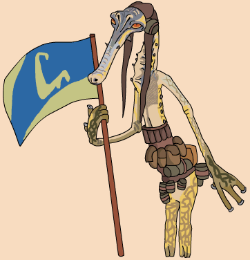

| Place in Boonta | 3rd- 15.52:108 |
| Nick name | Hit man |
| Classification | Glymphid |
| Gender | Male |
| Height | 4'3'' |
| Home World | Ploo II |
| Podracer | Manta Ramair Mark IV Flat-Twin Turbojet |
Aldar Beedo's occupation as a podracer is only his secondary job; in reality, he is a successful hitman. Just prior to the Boonta Eve Classic, Aldar Beedo assassinated Fluggrian Crime Lord Borzu Nale of the Ploo Sector. Unbeknownst to Beedo, Borzu's son Kam Nale had entered the race under the alias Elan Mak with the intention of taking revenge on the hitman. Meanwhile, Aldar Beedo took a job for podracer Wan Sandage to kill Sebulba during the race (50 thousand trugats in advance and after the deed in Episode I Adventures, but 2 hundred thousand Wupiupi in Podracing Tales). Neither Aldar nor Kam were able to accomplish their missions, and both carried their jobs over to the Vinta Harvest Classic. Once again, Sebulba evaded Aldar's grasp. Due to the short lifespan of the Devlikk race, Wan Sandage died before his assassin could finish the task. Aldar eventually became a bodyguard for Sebulba in place of Dud Bolt. Sometime later, Aldar Beedo was apprehended by a bounty hunter during the last race at Fire Mountain Rally. Whether or not Kam Nale was connected with this bounty hunter is unknown.
Clothing in picture based on official concept art and Episode I racer